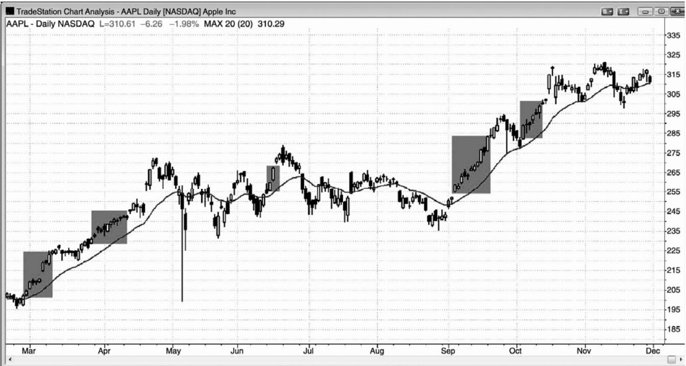
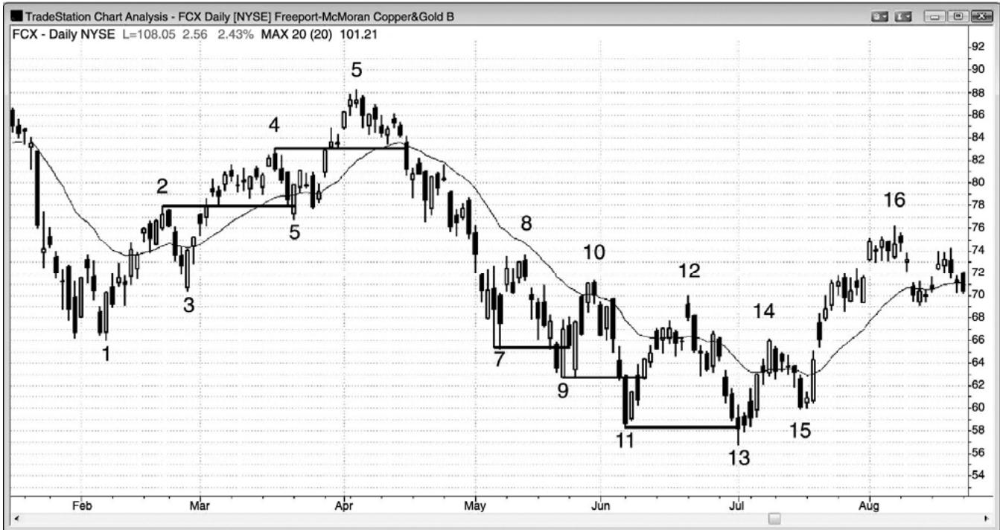
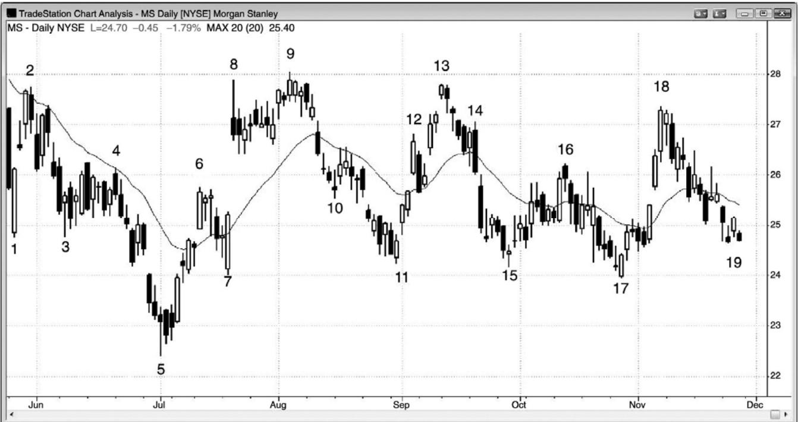
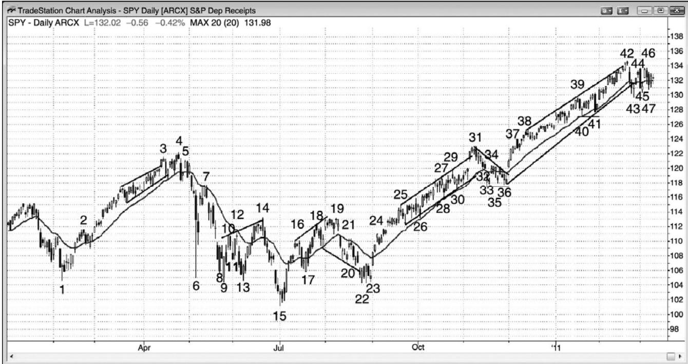
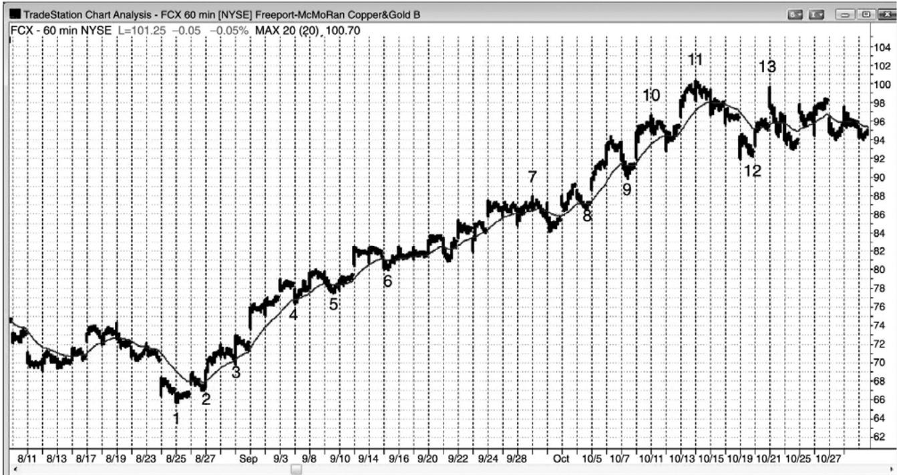
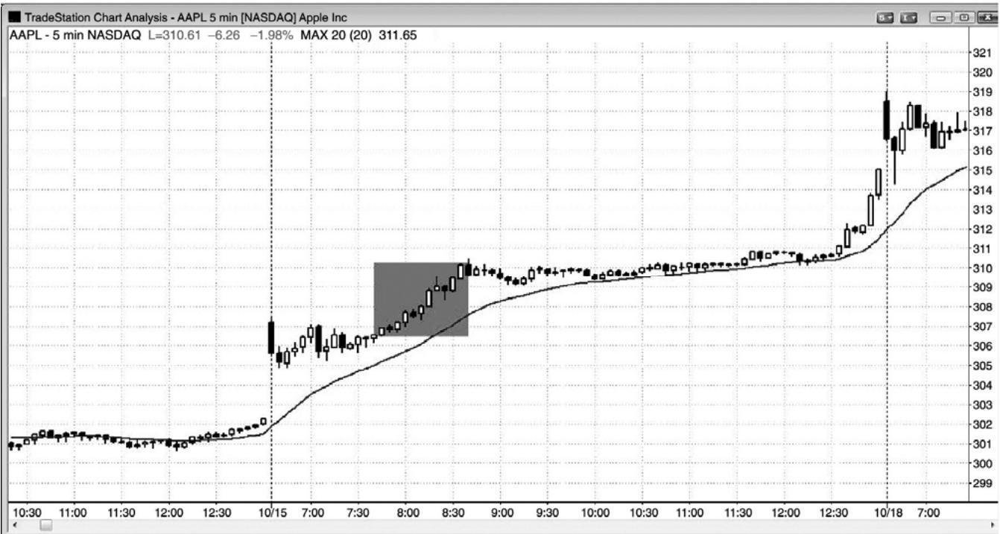
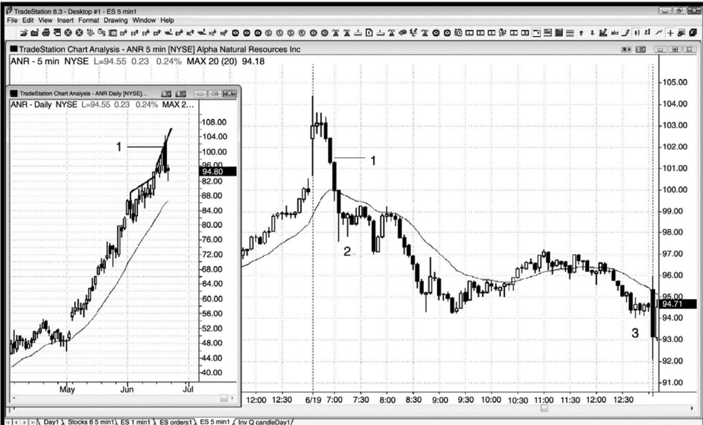
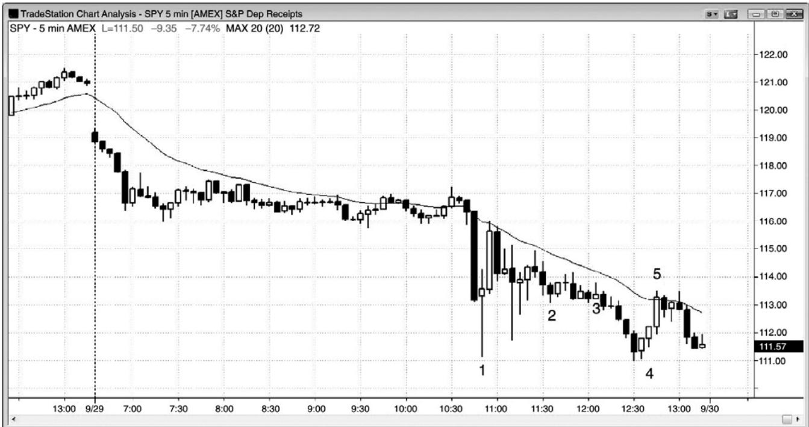
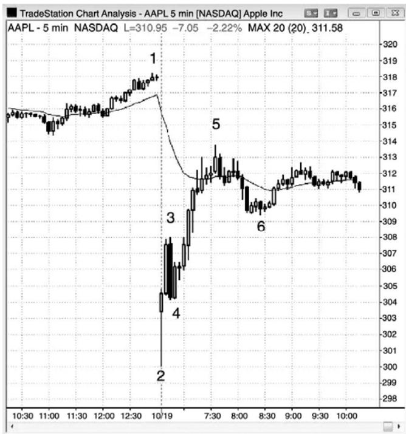
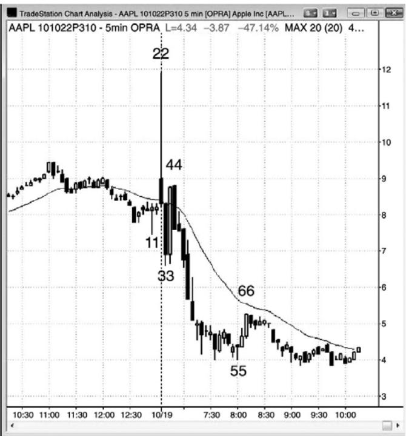

第23章 期权¶
第 23 章 期权
我曾经与一位女交易者谈过话。她是一家小公司的老板，为她自己和她的丈夫管理着一个股票投资组合。一天，她醒来时发现自己的投资组合比前一天下滑了$500,000。那一天，她变成了一位日内交易者，决定再也不持有交易过夜。她是一位优秀的图表阅读者，但是不再愿意可能导致巨大的亏损的隔夜风险。作为一种替代选择，对于希望持有几天到几周的交易，她会切换到期权交易。她是一位很有能力的交易者，会继续利用投资组合中的一大部分来做期权交易，而不只是把自己限制于日内交易。近几年我再没有与她交流过，但是我确信，无论她是否是严格的日内交易者，她都做得非常好，但是如果她把期权加入到她的策略中，那么可能会做得更好。
因为期权的买卖价差常常很宽，所以交易者们通常应该只考虑在较高时间框架图表上做期权交易。任何交易者方程明显为正的架构都是合理的。以下情况下，交易者们应该考虑使用60分钟图或日线图购买看涨或看跌期权：
• 多头趋势中，在向均线回撤购买看涨期权。
空头趋势中，在向均线反弹购买看跌期权。
• 在交易区间的底部购买看涨期权。
• 在交易区间的顶部购买看跌期权。
• 在空头台阶形态中新的低点购买看涨期权。
• 在多头台阶形态中新的高点购买看跌期权。
• 在强多头突破中的多头尖峰期间购买看涨期权。
• 在强空头突破中的空头尖峰期间购买看跌期权。
• 在交易区间底部的弱低点 1 或低点 2 购买看涨期权。
• 在交易区间顶部的弱高点 1 或高点 2 购买看跌期权。
你也可以根据类似 5 分钟图的较小时间框架来交易期权：
• 如果你是一位新手，你的账户受到限制，或者你希望固定自己的风险，那么你可以购买 SPY 看跌或看涨期权，而不是交易 SPY 或电子迷你。对于 SPY 以及很多大盘股，即月期权和在价（ATM）期权的买卖价差通常只有1个跳动。这使得交易者们能够利用5分钟图设定交易，仍然获得不错的交易者方程。
• 比较少见的情况下，日内价格波动会非常大，你不愿意信任相关产品（比如电子迷你、股票、债券、货币或你正在交易的无论什么市场）的报价和执行，那么你就可以为基于 5 分钟图的日内交易使用限价单购买看跌期权和看涨期权。
还有其他很多情况下值得交易期权，而且还有很多非常有用的期权策略，但是前面讲到的方法是日内交易者最容易使用的，也是分散精力最少的。如果交易者们能够处理其他类型的期权交易，那么他们应该去做，但是对于大部分活跃的日内交易者来说，无法在不影响日内交易收益潜能的情况下去做那些交易。风险逆转（Risk reversals）、无现金双限期权（cashless collars）和比率价差（ratio spreads）一般都会提供极好的交易者方程，但是或许会令日内交易者太过分神。订单设置相对复杂，而且需要精力非常集中才能正确设置。你可能有很多成交价和到期日需要考虑；买卖价差常常较宽，因此交易会感觉有点贵；而且你应该使用限价单，但是它们常常不会很快被执行。然后，你不得不管理交易，而且常常随着交易的发展希望做出调整。外汇交易者们会使用货币交易来对自己的股票投资组合进行套期保值，当他们认为股票将要下跌时，他们会买进风险厌恶型货币，比如瑞士法郎或美元，或者做空风险喜好型货币，比如瑞典克朗，来达到相同的套期保值效果。这避免了期权费用，但是需要熟悉外汇市场，外汇市场是一个隔夜变化幅度很大的市场。所有这些都会令日内交易者非常分神，大部分人要么选择集中精力做日内交易，要么只添加简单的看涨或看跌期权购买。
对于购买看跌或看涨期权，有时购买跨期期权，准备持有交易一天到若干天的交易者们来说，那是最简单的方法。你可能考虑允许出现一个与自己的头寸相背的新的极点，而且你可能愿意加仓，因为利用这些策略，你的风险是已知的，而且是有限的。在一个可能的重要趋势反转顶部，你还可以简单地卖空一个小型股票头寸，但是你可能会在一天中花太多时间去关注它，这将导致你错过日内交易，最后，那笔股票交易得不偿失。
期权含有时间价值，时间价值每天都会销蚀，降低你的看跌或看涨期权的价值。如果你购买的是跨价期权组合，那么在买、卖两个成交价都会损失，当你进入和退出期权时都会损失，而且你的佣金要加倍。由于这些费用，所以交易者们必须限制自己只交易最好的期权架构。另外，仅当净收益的确增加时，才应该把期权加到日内交易中，所以对于大部分交易者来说是不适合的。对于所有交易者来说，交易任何产品赚钱都不容易，大部分稳定盈利的交易者通常选择专门交易一种产品，要么是期权，要么是期货或股票，而不是在三者之间分散注意力。不过，注意期权交易者们把股票头寸看作他们交易的一个基本成分，大部分期权交易者持有头寸的时间是数天到数周，而不像日内交易者那样只持有数分钟到数小时。
P234
在一种不大常见的情况下，日内期权要比期货和股票更好。那就是当市场处于巨大的自由下跌中，并且接近跌停时。如果一个可靠的反转形态形成，那么你可能认为买进电子迷你的风险很小，但是，即便你的经纪人声誉很好，风险也可能很大，甚至小型头寸的风险也很大。怎么会那样呢？因为系统可能会过载，你的订单可能不会被处理，或者在 30 分钟或更长时间内不会反馈给你。如果你简单地在自己认为的底部买进，然后市场跌穿你的保护性止损，那么你仍然可能看到自己的止损订单在电脑屏幕上处于有效状态，未被执行，尽管市场已经大幅跌穿你的止损价位。那么你会做什么呢？你不知道订单是否被执行，当你打电话给经纪人查询时，你的账户被冻结了 30 分钟。大约 30 分钟后，你的电脑屏幕显示你的订单已经在应该执行的时间被执行，有一些滑移价差。在巨型空头日，当你的经纪人的订单系统不能正确工作时，你无法应对这种长时间的不确定性。在电子迷你中，你可能轻易损失掉 10 点，因为经纪人永远不会为你的订单执行负责。一种替代方案是购买看涨期权，于是，如果市场在你入场后自由下跌，那么你可以确定自己的风险有多大。你可以对你的看涨期权设置止损，尽量限制任何潜在的亏损，但是，即便市场在没有执行你的订单的情况下大幅自由下跌，至少你知道即便止损单从未被处理，自己的风险也不会带来大的灾难（假定你的头寸规模是合理的）。市场怎么会跌穿你的保护性止损而不触发呢？止损是以最后一笔交易为基础的，如果在你的特定期权中没有发生交易，那么买价和卖价可能跌至你的止损的大下方，但是你的止损不会被执行，你的期权的价值可能比你所想的要低得多。重要的是要明白，期权中的保护性止损常常不会提供任何保护，如果市场向对你不利的方向快速运动，那么你应该尽快使用限价单离场。
你还可以考虑在日内交易 SPY 期权，而不是 SPY 或电子迷你，特别是当你刚刚入市，担心巨大亏损时。举例说明，如果你在SPY中购买一份一月期的在价（ATM）看涨期权，那么可能要花$250，就算 SPY 跌到零（显然这是假定你购买看涨期权，没有出错，比如做空光身看跌或看涨期权），你最多也就损失那么多。即便 SPY 在下个小时下跌了 1%，你还可以卖出你的看涨期权，而损失不越过$100。如果你在多头趋势中的回撤期间购买看涨期权，那么你很可能会在离场时赚到 10%到 20%的利润，也就是$10 到$20。这需要 SPY 运动 25 到 45 美分左右。反之，如果 SPY 下跌 50 美分，那么你可能在亏损 30 美分的情况下卖出你的看涨期权，也就是亏损$30。购买看跌或看涨期权，使得新手们对于自己的风险上限更加确定，对于他们来说，这可能会更容易去思考如何交易，而不必一直担心自己的资金。
在期货或股票市场中，如果你一天只做一两笔日内交易，那么你就可以在期权市场中更活跃一点，特别是当你还积极地做股票波段交易时。适合交易的机会可以填满另一本书，这里我给出值得注意的几点。举例说明，如果你根据日线图做多一只股票，而且愿意在更低价位加仓，那么你可以在低于市价一个成交价处卖出一张看跌期权。如果股价上涨或甚至小幅下跌，你就可以收取溢价，反之，如果股价下跌，跌至看跌期权的成交价下方，那么那张看跌期权的买家将会把股票推给你（你将被迫在成交价买进那只股票），于是你便在那个更低价位对多头头寸加了仓。
对于做多股票的交易者来说，期权的另一种常见用法是卖出价外（OTM）看涨期权以收集溢价。卖出这种备兑认购期权（covered call）每年可能会为你的投资组合增加约 10%的收益，但是，它偶尔会把你带出一只正在暴涨的股票。
如果你正预期股票和期货合约中出现一波大的运动，但是你不知道方向，跨式期权组合（同时购买一张看跌期权和一张看涨期权），但是那样你会受到时间衰减、佣金和买卖价格的影响。跨式期权很少值得考虑。对于期货交易者来说，另一种方案是把期货和期权组合到一个德尔塔中性头寸中，也就是说它的上涨或下跌机会是相等的。举例说明，在电子迷你中，一张多头合约等于购买500张SPY或10 张在价看涨期权。如果你买进一张电子迷你合约（或500 张 SPY）和 10 张 ATM 看跌期权（或者，你可以做空一张电子迷你或 500 张 SPY 并买进 10张 ATM 看涨期权），那么在你设定交易时，这就是一个德尔塔中性头寸。如果市场上涨或下跌，德尔塔就会改变。如果市场上涨，那么你的电子迷你所赚到的就大于你的看跌期权所损失的；如果市场下跌，那么你的看跌期权的收益将大于电子迷你的损失。仅当市场横向运动若干天时，你才会赔钱，那是因为你的期权的价值在衰减。当市场运动时，为了增加收益，你可以做出大量的微调，但是电子迷你的日内交易者们太忙，无法把它回到自己的交易中。
期权交易者们常常会谈到“催化剂（catalysts）”，也就是即将到来的、会引起股票大幅波动的新闻事件。最常见的催化剂是即将发布的收益报告，不大常见的包括关于新产品或收购的预期信息。由于存在不确定性，而且出现大幅上涨或下跌的可能性较大，所以溢价通常会大幅膨胀。新闻一公布，溢价就会大幅暴减，因此，即便你看到在你预期的方向出现了大幅运动，你仍然会赔钱！举例说明，假设你认为亚马逊（AMZN）的收益报告会非常不错，于是你在前一天买了一张$5.00 的看涨合约，收益报告很好，AMZN 开盘上涨 5%；不过，你的看涨期权可能仅在$4.00 开盘。你对收益报告和强势开盘的预期可能都是正确的，但是溢价很快膨胀，使得 AMZN 可能不得不上涨 10%才能让你的看涨期权增值。由于这种大幅膨胀的溢价的快速损耗，当他们在“催化剂”前购买期权时要谨慎。如果波动性太高，那么它们会太贵，需要巨幅运动才能获利。降低那种影响的一种方法是购买跨期期权组合，于是你的做空期权的溢价损失，基本上可以弥补做多期权的亏损，但是，仅当你计划持有头寸一周或更长时间时，跨期期权才值得购买，因为它们通常仅在出现大幅波动时才会获利，或者是出现小幅运动，临近到期时才会获利。
P235
很多指数期权交易者关注芝加哥期权交易市场波动率指数（VIX），它一般与指数的运动方向相反，当市场恐慌下跌时，它一般会大幅上升，交易者们正买进数量庞大的看跌期权来保护自己的多头头寸。另外一些交易者显然是在购买看跌期权，打赌空头趋势将会恢复。不过，在市场开始再次向上反转之后，看跌期权的购买还会有些上升，但是购买的原因不同。那些购买不是由于投机者打赌市场下跌，也不是恐慌的多头套利保值，而常常是自信的多头正在保护他们的新的多头头寸。当这种情况发生时，购买看跌期权暗示着下行风险相当小。这些新的多头情愿在抛盘期间持有他们的股票头寸，原因是他们购买了看跌期权作为保护，于是，如果市场下跌，那么他们将坚持持有自己的股票和期货头寸，而不是恐慌卖出，驱动市场进一步下跌。换言之，这种看跌期权的购买行为是下侧风险萎缩，多头正变得自信的征兆。然而，我们不可能知道市场中整体的看跌期权购买是为了进一步的下跌而投机，还是为了保护新的多头。依靠电机专家的观点，永远都不是建仓的好基础。如果他们能够通过交易赚很多钱，那么大部分人不会浪费时间在 CNBC（美国消费者新闻与商业频道）上发表自己武断的观点。
很多套利基金购买股票，同时也购买看跌期权作为对冲，或者是在他们的投资组合中的特定股票中，或者是在整个大盘中，比如 SPY 看跌期权。套利基金极少是完全套利的，大部分会根据大盘来调整看跌期权保护的数量。有些使用波动率指数来对他们的看跌期权进行调整。举例说明，在过去的几周中，如果波动率指数由于股市下跌了 10%而上升 20%，那么他们会买回部分或全部看跌期权，因为那些看跌期权可能已经完成了它们的任务。他们一开始在市场处于较高价位时购买看跌期权作为保护，以防他们的股票投资组合中出现抛盘。如果市场下跌，他们的股票贬值，那么他们的看跌期权将会升值。当他们等待市场再次反弹时，他们会将自己的期权获利了结，变成较弱的对冲状态，或者买进新的看跌期权，把自己的套利向前滚动进入一张远期合约，通常成交价会更低。如果市场强势反弹，他们的套利相对较弱，那么他们会购买更多看跌期权，以增加自己下侧的保护。
如果你在日线图或 60 分钟图上交易期权，并且自信地认为一波运动将在接下来的一两天内开始，那么最好只购买一种期权，而不是套期组合。然而，如果你认为那一波运动要在一周或更长时间后才开始，那么你可以通过购买跨期组合来降低时间衰减的影响。由于短期期权的价值会随着市场向你的方向运动而增加，所以你降低了总的获利性，但是整体的风险/回报比提升了。一般来说，为短期期权选择成交价时要靠近支撑区或阻力区。举例说明，如果 SPY 在 105，而且出现一个强买进信号，但是在 108 附近存在阻力，那么你可以购买一月期的 ATM 105 看涨期权，并且同时做空 OTM 108 看涨期权，回收部分资金。长期看涨期权的净费用小于净在短期看涨期权上收集的溢价，可能约为$1.20。由于 108 是阻力位，而阻力位的作用就像是磁力位，所以市场应该会被吸引至 108 区域。两种看涨期权的价值都会增加，但是长期 ATM 105 看涨期权的增值会快一些，不仅弥补了短期 108 看涨期权的损失，而且还有盈利。如果市场在一个非常强的多头尖峰中上涨，而且你认为它轻易就能突破 108 阻力区，那么你可以认赔买回短期 108 看涨期权，持有长期 105 看涨期权，它所产生的利润足以补偿短期看涨期权的亏损。如果向 108 的反弹较弱，而且你认为市场可能抛盘，那么你应该获利退出自己的跨期组合。通常不值得持有跨期期权组合到到期日，尽管那时会获得最大利润。你的预期已经改变，所以你需要重要评估自己的头寸，当交易期权时，这是总应该考虑的。如果到期时 SPY为 108，那么短期 108看涨期权将毫无价值，长期 150看涨期权的价值为$3.00，于是你总的净利润可能约为$1.80。然而，如果市场在到期前两周达到 108，你的净未平仓利润是$1.50，那么可能最好退出，因为不值得在到期前等待市场跌破 105，冒险使$1.50 的利润转变为亏损。当市场反弹至 108 时，你的风险/回报比发生了变化，不再像开始设定交易时那样好。最好获利了结，寻找下一个交易机会。
交易者既可买进也可卖出跨期期权组合。举例说明，如果 SPY 在 130，交易者认为它将上涨，那么他可以购买看涨跨期期权组合，即购买 ATM 130 看涨期权，并在一个较高的成交价卖出 OTM 看涨期权，比如 133 看涨期权。如果他看涨，那么也可以通过做空一组看跌期权跨期组合，比如卖出 ATM 130 看跌期权，买进 OTM 125 看跌期权。一般来说，大部分交易者喜欢购买跨期期权组合，而不是卖出，因为他们喜欢做多，而不是做空 ATM 期权。如果他们做空 ATM 期权，标的产品的价格向对他们不利的方向小幅运动，那么他们就很可能增加一些不希望产生的工作。举例说明，如果他们做空那个看跌期权跨期组合，SPY 跌至129，一直待在那里接近到期日，那么他们的股票可能会被推动，也就是说经纪人会自动在 130 卖出他们的股票；然后他们将不得不决定如何处理那只股票和剩余的长期 OTM 看跌期权。
P236
当你计划持有交易几周时间，特别是如果你能持有头寸进入最后一周时，购买跨期期权组合通常是最佳选择。这是因为，短期成交价总是更加 OTM（译注：指比标的物的成交价更高）；一个头寸越 OTM，它经过时间衰减损失溢价的速度就越快，那种衰减在最后一周大大加速。不过，如果你正预期一波大的运动会在那一时间之内超越你的短期成交价，那么你还可以购买只打算持有几天的跨期期权组合。仅当你认为市场将在那一周超越你的短期成交价时，才为一笔你预期持有不到一周的交易购买跨期期权组合。否则，购买简单的看涨或看跌期权。举例说明，比如说SPY在134，你认为它将在下一周跌至130。那么你可以买进看跌期权，比如 ATM 134 看跌期权，或者你可能希望考虑购买跨期期权组合，比如一张长期 134 看跌期权和一张短期132或131看跌期权。
即便市场保持不变，期权的价值每天也会衰减，所以仅当你认为自己的预期仍然正确的情况下，你才应该持有你的头寸。否则，离场，甚至是认赔离场。那么你怎么知道自己的预期是否仍然正确呢？观察这一时刻的市场，想像你并未持有头寸。下一步，问自己是否会建立那个头寸。如果你不会，那么你的预期就不再正确，你就应该立即退出。
初学者们常见的一种错误是持有盈利的期权头寸太长时间。举例说明，如果交易者在交易区间底部购买一张看涨期权，目标是下一周向上测试区间中点，但是市场只用一天便到达那一目标，那么通常最好在那一点将大部分或全部头寸获利了结。是的，强动能可能是一轮多头趋势的起点，但更有可能的是交易区间将会继续，要么市场不久便横盘运动，通过时间衰减销蚀溢价，要么市场会回撤，利润将会消失。期权利润消失得很快，所以一旦出现利润快速落袋为安是非常重要的。
仅仅因为一只股票非常有名，并不意味着它的期权会有很高的成交量。如果交易量不大，那么买卖价差可能会大到无法接受。举例说明，ATM看涨期权的买价可能是$1.20，而卖价可能是$1.80。这就意味着你可能不得不在$1.80购买，如果你立即卖出，那么你将收回$1.20，立即损失 60 美分，或者说你的投资的三分之一！总之，如果你所考虑期权的未平仓量低于1,000，或者近期日成交量不足 300，那么通常不应交易。如果想做的话，你应该尽量不交易冷清的期权。不过，如果你交易较为冷清的期权，那么总应该使用限价单入场和离场。即便那样，当你等待自己的限价单被执行时，可能要在那里做几个小时，有时你最终会放弃，离开市场，极大地降低了你的获利潜能。对于类似 SPY 这样的交易活跃的期权来说，最大的优点之一是，即月的ATM期权和近价期权的买卖价差通常只有1便士，所以你可以设定市价单，并且在极好的价位执行。
仅仅大的买卖价差并不应该成为购买期权的障碍，因为价差是与股份成正比的。当 AAPL的价格为$300 时，ATM 看涨期权的买卖价差可能是 20 美分，对于新手来说，可能看起来有点大。不过，如果期权价差是 2 美分，那么交易者们会毫不犹豫地购买一张价格为$30 的股票的期权。对于每一张 AAPL 看涨期权，他们可能购买$30 股票的 10 张看涨期权。这是一种在数学上恰当的交易方法。
如果你在日线图上的一个强尖峰期间入场市场在到达目标前还有一段路要走，那么价差可能非常有用。举例说明，如果 SPY 在 118，在一轮新的空头趋势中迅猛地跌至均线下方，而且你认为它将在几天内击中 115，那么你可能不愿意购买看跌期权，因为市场可能在跌至那一目标之前，突破向上反转至均线。作为一种备选方案，你可以购买 118 看跌期权和短期115 看跌期权。如果市场在接下来的几天中不间断地跌至 115 支撑区，那么你可以退出自己的看跌跨期组合，或许会获得$1.50 的利润。反之，如果它反弹至均线处的 120，那么你的跨期组合的账面亏损可能会达到 1 美元。如果你认为自己的预期仍然正确，那么你可以解开自己的跨期组合，买回短期看跌期权，或许获得 50 美分的利润，但是继续持有你的长期看跌期权。如果你是正确的，市场在下周跌至你的 115 目标，那么你可能在长期看跌期权上又赚到$2.00，交易的总利润约为$2.50。当市场对你不利时，需要经验才能够调整跨期期权组合，不过，如果你对自己的读图能力非常自信，那么这可能是一种不错的方法。
顺便提一句，支撑和阻力位处的短期期权增加了那些价位的力量，因为期权一般会以最大的未平仓量在成交价附近过期。在任意期权成交量处的成交量越高，那一价位的磁力就越强，于是增加了那一价位的支撑和阻力。如果成交量足够大，那么可能在到期日前后对市场产生影响。如果存在明显的支撑位或阻力位，那么成交量可能变得非常巨大，原因是那个成交价将产生大量的期权交易。实际上，SPY 和 QQQ 常常在接近看跌期权和看跌期权成交价处以最大的未平仓量到期。期权的短期一方通常是由机构占据的，他们是聪明钱，他们会在期权市场和相关市场中尽其所能地使他们的短期期权在到期时毫无价值，于是他们能够收到完整的溢价。
VIX 是对标准普尔 500 指数期权的波动率的衡量，当你认为很可能出现坚持到底时，在强多头尖峰期间购买看涨期权、SPY 或电子迷你通常是不错的交易，但是存在与 VIX 相关的风险。顺便提一句，VIX 中的每 16 点对应着预期的标准普尔 500 指数中平均日区间的 1%（所以一个 32 的 VIX 意味着 SPY 和电子迷你的平均日区间约为 2%）。如果尖峰足够强，那么 VIX也可能形成上涨尖峰，你的看涨期权的费用将在购买时被评估。如果接下来的一两个小时市场进入一条平静的多头通道，那么 VIX 的下降幅度可能足以使你的看涨期权的价值不会增长。因此，当你希望在一个多头尖峰中购买看涨期权，或者在一个空头尖峰中购买看跌期权时，如果你不是在尖峰初期买进的，那么最好等待回撤，以便降低在 VIX 中的短暂上涨尖峰中购买的风险，因为那种尖峰将导致所有期权的价格过高。
P237
期权波动率的大幅上升，通常会导致 OTM 期权价格不成比例地上涨。这被称为扭曲（skew），扭曲的价格可能会令开始使用跨期期权组合的交易者们感到不安，因为那会使得利润小于看起来的合理数值。在一轮多头市场中的交易区间内，当 SPY 在 133 附近时，如果交易者购买一个 133/128 看跌跨期组合，为 133 看跌期权支付$3.50，做空 128 看跌期权收到$2.00，由于某种世界性的危机，SPY 在接下来的两周下跌了$4.00，那么该交易者可能假定该跨期组合也会上涨$4.00。然而，由于市场暴跌时有如此多的交易者购买OTM看跌期权来保护他们的多头头寸，所以它们的价格与 ATM 看跌期权相比不成比例地上涨，该跨期组合可能只上涨了$2.50，或者说$1.00 的利润。当市场暴跌时，波动率迅速上升，它将对 OTM 看跌期权（以及看涨期权）产生更大的影响。然而，市场可能不得不跌破那个较低的成交价 5%，或者跌至 123，才能让那个跨期组合的利润在到期前的数周内接近$5.00。仅当市场跌至较低成交价的大下方，或者在到期前最后一周期间，跨期期权才接近它们的利润潜能。对于交易者们来说，通常仅当他们预期一波运动在下几周某个点处靠近他们的短期腿时，或者仅当他们愿意持有跨期期权组合，然后在到期前一周左右退出时，他们才应该购买跨期期权。如果到期时 SPY 低于较低成交价 128，那么看跌跨期组合在到期时将达到$5.00 的全部利润，但是大部分交易者在那之前就已离场。
在日线图上的大尖峰期间，由于 OTM 期权的扭曲，交易者们应该考虑直接（outright）期权购买，如果他们预期下一周左右出现一波上涨或下跌。如果他们计划在到期前几周离场，那么他们应该考虑不购买跨期组合。举例说明，如果市场在日线图上刚刚强势下跌3%，现在向一个可能的更低高点回撤，交易者们预期很强的第二条下跌腿在下几天开始，那么较好的做法可能是购买直接看跌期权，而不是跨期期权组合。如果他们愿意以$3.00 的总费用购买两个看跌跨期组合，那么他们可能应该考虑以$3.50 购买一张 ATM 看跌期权。如果下一周左右真如他们预期的那样迅猛下跌，那么如果市场快速跌至 128，那么他们的看跌期权可能价值$7.50。这仍然小于他们可能希望赚到的$5.00（SPY 在他们购买看跌期权时的价格 133 和当前价格128之差），但是比他们在两个看跌期权组合上赚到$2.00要多很多。如果几天之内他们的看跌期权快速升值$3.00 或$4.00，那么他们应该卖出，因为市场可能回撤并进入交易区间。如果他们继续持有看跌期权，那么$4.00 的利润可能迅速变为$2.00 的利润。反弹可能说服他们，他们之前的预期不再正确，于是他们将在获得$2.00 利润的情况下离场，要是他们不那么贪婪就好了。期权市场常常为交易者们提供意料之外的礼物，但是很少像初学者们想像的那么符合逻辑。当期权市场组合礼物时，较好的选择几乎总是接受，然后寻找下个交易机会。
图 23.1 在多头尖峰中购买看跌期权

当股票处于强多头尖峰中时，交易者们可以购买看涨期权，或者看涨跨期组合。很多在强多头市场中购买看涨期权的交易者喜欢OTM成交价，因为时间衰减会略低。如图23.1所示，这张AAPL的日线图出现几个多头尖峰，它们由一系列尾线短小的多头趋势棒构成，棒线之间极少重叠。动能强劲，使得几率偏向于价格上涨。如果交易者们希望参与到上涨运动中，但是限制自己的风险，那么他们可以购买看涨期权或看涨期权跨期组合。他们可以在几天之后部分获利了结，然后在看到反转或向入场点回撤的第一个信号后退出剩余头寸。
P238
当市场趋势上涨时，交易者们希望买进，但是他们希望在价格略低处买进，于是他们常常卖出一张略低于市价的看跌期权。举例说明，在用阴影突出显示的任意一条多头腿期间，交易者可能卖出一张一月期的看跌期权，大约为 2%OTM，卖价是$8。如果市场下跌，他们推动那只股票，他们在低于当前价位 2%处入场，他们感到非常高兴。反之，如果市场继续上涨，那么他们就抱着那$8，大约为一个月2%的利润。其他交易者可能会直接卖出一张ATM看跌期权。举例说明，当市场在 260，而且迅速上涨时，他们可能会卖出一张一月期的 260 看跌期权，卖价大约是$12。如果他们推动那只股票，那么他们就保留那$12。也就是说他们购买那只股票的净费用是 248，即便它从未大幅跌破 260，而只是继续上涨。
图 23.2 利用期权在台阶突破反向交易

当市场处于台阶形态中时，你可以利用期权在每个突破处反向交易，预期市场向前一台阶回撤。如图23.2所示，市场在反弹至棒4之后，FCX的日线图回撤至高点棒2下方，意味着多头不是很强。正确地假定市场向上突破棒 4 之后将回撤至棒 4 高点下方的交易者们，一旦当天明显有可能成为一个强空头趋势日，那么他们可能会在棒 5 十字星或者在次日收盘前购买看跌期权。
当市场在棒9向上反转，并且超越棒7低点几美元时，交易者们会在棒11收盘或收盘前购买看涨期权，预期反弹至少会超越棒9低点一两美元。他们可能会在棒13收盘再次购买看涨期权，原因是他们看到了那一棒底部的大尾线。
棒 12 是一条空头反转棒，一个潜在的最终旗形反转，一条均线缺口棒，与棒 10 构成一个双重顶，以及对一段可能的交易区间的顶部的弱高点 1 或高点 2 突破。在那一天结束时购买看跌期权是合理的。由于市场从棒 5 开始便处于一条较宽的空头通道内，所以很多交易者会在前一条下跌腿的中点上方以及均线附近的每一波反弹购买看跌期权。很多人会等到接近当天收盘，确信当天将成为一个空头趋势日，比如在棒 8、10、12、以及棒 14 后一棒。他们在最近的波段低点下方获利了结，所有空头的获得了结，加上多头的买进，结果使得市场在每个新的低点之后向上反转。在新的低点处，空头正在买回他们的空头头寸，而不是继续之前的预期，在突破时进一步做空。这就表明空头趋势正在转变为双向市场（交易区间）。
图 23.3 利用期权在交易区间极点做反向交易
Created with TradeStation

P238
当市场处于交易区间内时，交易者们可以在区间顶部附近购买看跌期权，退出先前购买的看涨期权，在区间底部附近购买看涨期权，退出看跌期权。如图 23.3 所示，在从低点棒 5向上反转之后，摩根士丹利（Morgan Stanley，MS）在棒9之后向下反转，那是第二次尝试向上突破高点棒 2。由于出现一个截止棒 6 的上涨尖峰，然后回撤至棒 7，所以截止棒 9 的三次上推（棒 6 是第一推）的作用很可能就像是一条通道，随后是对通道底部棒 7 的测试。交易者们可能会在棒9后面第三棒那条空头棒的收盘价附近购买看跌期权。
棒 11 是一条多头反转棒，与棒 7 形成一个双重底多头旗形，也是截止棒 10 的空头尖峰之后的一条通道的底部。临近那一棒收盘，交易者们可能会退出看跌期权，购买看涨期权。
棒 13 后一棒拥有一个空头实体，交易者们可能会在区间顶部退出看涨期权，买进看跌期权，特别是由于这是一个楔形空头旗形。棒 10 后面两棒形成第一次上推，棒 12 是第二次上推。
截止棒 15 的下跌运动之后是一个非常强的尖峰，虽然棒 15 与棒 11 形成一个双重底，但是市场可能还需要更多的基础才会大幅上涨。如果交易者们真的在这里购买看涨期权，那么应该在楔形空头旗形顶部棒16的反转获利了结。
棒 17 是一条多头反转棒，是高点棒 9 之后的第三次下推。很多交易者把这看作一个潜在的多头三角形，形成于从棒 5 到棒 9 的强劲运动之后，这是一个买进看涨期权的机会。它也是从交易区间底部的一个低点 2 向上反转（棒 7、11、和 15 确定了区间底部）。交易区间底部的低点2做空信号通常会失败，引出向上反转，就像大部分突破交易区间的尝试一样。
当职业期权交易者认为市场将会反弹时，他们有时会使用风险逆转（risk reversal）策略，那超出了本书的范围。举例说明，市场从低点棒 5 强势反转，然后进入一段交易区间。很多交易者合理的认为市场很可能再次测试交易区间的顶部，甚至有可能突破至一个新的高点。在棒 15 双重底之后，期权交易者看到 24.00 附近有强势买进，他将很高兴能够在那时买进。由于他认为市场会继续走高，所以他可能会在市场从三角形（棒 7、11 和棒 15）底部棒15 向上反弹的任意点购买看涨期权。如果他以 1.50 的价格购买一月期 11 月 26 日 OTM 看涨期权，那么或许能够通过卖出一张 OTM 24 看跌期权完全收回购买看涨期权的费用，那将带给他大约 1.50 的信贷。他的长期 26 看涨期权和他的短期 24 看跌期权的净费用是零，这种策略被称作“风险逆转（risk reversal）”。如果市场跌破 24，那么那只股票将在 24 被推向他，那一价位刚好是他希望买进的价位。然后，他会做多那只股票，仍然做多看涨期权。如果市场迅速下跌，那么他会失去用来购买看涨期权的 1.50，而且股价跌破他的入场价 24 多少美元，他就会失去多少美元。然而，他认为这是不大可能的，在这种情况下，他有 70%的可能赚钱。市场短暂跌破 24，是在距到期很多周的情况下，像那样的单棒小幅下探，不大可能他会被推向那只股票。如果他那样操作的话，那么他就是做多那只股票和看涨期权，他可能会在市场测试交易区间顶部棒 18 时将股票和期权同时获利了结。如果他没有被推向那只股票，那么他可能会了结自己的长期看涨期权和短期看跌期权，结束风险逆转操作，获得大把的利润，他的期权价值可能已经接近于零（当它卖出时，他收到了 1.50，现在买回时只花了 10 美分）。风险逆转类似于预期市场可能形成一个更低低点重要趋势反转。如果市场跌至一个更低低点，那么交易者认为市场正在向上反转，正舒适地买进（被推向那只股票）。
图 23.4 SPY 是很好的期权市场

P240
如图 23.4 所示，SPY 的日线图不断提供购买期权的机会。
截止空头反转棒棒 4 的两条腿更高高点是一个很好的看跌期权买进架构，预期市场会测试均线。市场正在于棒 3 形成一个小型的双重顶，所以多头趋势正在演变为交易区间的几率很高，这种情况下，市场很有可能会测试区间底部和均线。一旦看到那一棒很可能成为一条强空头棒，交易者们可能会在收盘前购买看跌期权。棒 3 是一波买进高潮和对一条多头通道的突破，随后是一条强空头棒。这表明空头正愿意变得积极。在截止棒 4 的两条腿更高高点，认为市场会再次测试均线是合理的。
当棒 6 收盘时，很多交易者假定它的低点很可能会被测试。较高的波动率增加了期权溢价，于是看跌期权的溢价由于那一棒的非常长而极大地膨胀。交易者们可能会购买一个看跌跨期期权组合，买进一月期 ATM 113 和卖空一张大约低 4 个成交价（strike）的看跌期权。如果短期看跌期权太低，那么它的价值太小，所以不值得卖空。如果市场快速跌破 109，那么交易者们会获利退出那个跨期组合。然而，如果他们持有并看到棒 7 处向均线的反弹，那么他们可能会买回短期 109 看跌期权，它的价值已经大幅降低，继续持有 113 看跌期权，尽管它的价值也已大幅降低。然而，看跌期权的价值在下几棒快速上升，于是交易者们能够在跨期期权的两侧都赚到利润。这被称为跳出（leg out）跨期组合，因为你是在不同的时间退出两部分或两条腿。
棒 7 是大型空头尖峰棒 6 之后的均线测试。几率偏向于抛盘，至少跌至那个空头尖峰的中点。当他们看到那一只可能即将成为一条强空头棒时，交易者们会在均线或临近强空头棒棒7收盘时购买看跌期权。
棒 9 是一条强多头趋势棒，是三棒之内的第二条强多头趋势棒，所以是买压的征兆。棒6 底部的长尾线是在这一价位强势买进的征兆。测试均线的几率很高，于是，一旦交易者们会看到棒 9 即将成为一条强多头反转棒，他们就会在那一棒收盘前购买看涨期权。
棒 13 是第二次尝试从巨型空头尖峰和一个三角形底部下方向上反转，三角形中棒 6 和棒9 形成头两条下跌腿。它也是一条多头反转棒，是表明 105 区域存在买压的另一个征兆。交易者们会在那一棒收盘前购买看涨期权。
棒 14 是一条强空头反转棒，一条均线缺口棒，以及一个楔形空头旗形的顶部，因此，一旦交易者们看到那一棒即将成为一条强空头棒，他们就会在收盘前购买看跌期权。
棒 15 是一个较为冒险的看涨期权购买架构，因为下行动能非常强劲，但它是高点棒 4 之的多头尖峰有多强，他们就会在很强的多头反转棒棒 17 收盘购买看涨期权，预期大型楔形底和强多头尖峰之后出现第二条上涨腿。
棒 19 之前的 5 棒，市场正在停止运动，十字星收盘足以作为在楔形（棒 16、18 和 19）和与棒14构成的双重顶顶部购买看跌期权的理由。
棒 21 是一个强空头尖峰之后向均线的一波两条腿回撤，因此，当交易者们看到出现两条十字星棒均未能收盘于均线上方时，他们会在收盘购买看跌期权。
棒 23 是过去五棒当中的第三条多头棒，是买压的征兆。在反弹至棒 19 之后，市场正努力形成一个更高低点。这也是从棒 19 开始的一轮尖峰和通道空头趋势，与棒 18 后面的低点和棒 20 构成一个楔形多头旗形。交易者们可能会在多头收盘或下一天收盘购买看涨期权，那是一条大型多头趋势棒，尾线很短，收盘远在均线之上。这是一个重要底部之后的强多头尖峰的一部分，随后市场很可能走高。如果他们正计划持有一两个星期以上，那么他们会购买看涨跨期期权组合，而非看涨期权，以便降低时间衰减的影响。
P241
棒31是向上突破一条延长的多头通道后的一条空头反转棒，最低限度，市场应该测试均线，并且刺穿通道底部。这是购买看跌期权的一个很好的机会。实际上，当市场位于前一棒高点上方时，交易者们会在开盘购买看跌期权。为什么那会是一笔不错的交易呢？当市场向上突破一条很长的多头通道时，它通常会向通道底部反转，而且反转通常是在五棒之内。因此，在第三棒上方购买看跌期权拥有有限的风险。
这条通道有一个非比寻常的特点。在过去 10 年中，市场第一次连续这么多棒（棒 26、28、和 30 没有触及）没有触及均线，出现这种情况之后，就会在同样多棒线之后测试均线。极端行为提供了向平均交易的回归。如果市场正在做过去多年都未做过的事情，那么那种行为很可能快速停止，期权交易者们可以反向交易。每当你看到某种异常行情时，就回顾或回测一下以前的数据，看一下它有多么反常。如果你在过去 10 年或 20 年的数据上做历史回测，那么你会发现 95%以上的时间里，当出现 30 棒或更多的连续缺口棒时，市场将会在 10 棒之内返回并触及均线。看到这一点的交易者们开始将多头头寸获利了结，并且在前一棒高点上方购买看跌期权，预期市场将测试均线。市场不久测试均线的几率极高，所以在这里购买看跌期权是一笔不错的交易，交易者们会在棒 23 测试均线时获利了结。举例说明，一旦市场在棒 31 之前形成一个单棒回撤，交易者们就会在向上超越它的高点的任意运动购买看跌期权，那发生在下一棒。市场从棒 31 的向上跳空开盘下跌。在一条紧凑的多头通道已经行进了很长时间后，空头开始在通道顶部波段高点上方和先前棒线的高点上方入场。当某种稀缺事件发生时，它是不能持久的，所以是高潮行为，随后的回撤通常比大部分交易者预期的幅度更大，持续时间更长，所以棒31高点很可能会至少保持几周时间，至少形成一波两条腿的横向至下跌调整。调整的规模应该与图上先前腿形的棒线数量和点数接近，因为市场倾向于继续做刚刚一直在做的事情（惯性）。
类似的强劲而紧凑的多头通道形成于棒 3 之前的上涨运动，以及从棒 36 到棒 39 的上涨运动中。交易者们在先前棒线的高点上方、强多头趋势棒（可能是耗尽型买进高潮）的收盘、以及这些大型多头趋势棒之后的小型棒购买看跌期权，预期市场在一到三天内向下测试。利用日线图上的这些刮头皮架构，购买看跌期权的交易者们赚到了 50 美分到 1 美元。
另一个极端行为的例子出现在棒 42。虽然从棒 41 开始的上涨运动中这张 SPY 图表上出现了一两条小型空头棒，但是电子迷你图表没有。相反地，它形成 15 条连续的多头趋势棒，那是很多年都没有出现过的情形。这就意味着那是一种极端行情，所以是高潮行为。在棒42之前的若干棒中，聪明的空头开始对看跌期权头寸逐步加仓，预期至少出现一波10棒、两条腿调整，很可能会跌破均线。
图 23.5 多头趋势中在向均线的回撤购买看涨期权

当市场处于一轮多头趋势中时，如图 23.5 所示 FCX 的 60 分钟图，交易者们可能会在每次向下刺穿均线时购买看涨期权。大约 80%的结束强趋势的尝试失败，所以看涨期权在随后的交易日中很可能盈利。计划持有一两周以上的交易者会购买看涨期权跨期组合，以降低时间衰减的影响。
P242
在截止棒 11 的三推（棒 10 是第二棒）之后，两条腿调整的几率很高，因此，交易者们不应在随后的下跌腿中购买看涨期权。
因为棒 11 是一轮过度的多头趋势中的第三次上推，所以随后要么是趋势反转，要么至少是交易区间。很多做多的交易者可能希望坚持持有自己的股票，但是要停止大的抛盘。一种策略叫做无现金双限期权（cashless collars，交易者们的“竖领”），那超出了本书的范围。多头可能会以 2.00 的价格购买一月期 OTM 90 看跌期权，并且通过卖出一张 OTM 105 看涨期权收回 2.00 的资金。对于跌破 90 的保护，他的净费用是零（“无现金”）。如果市场上涨 5%，他的股票将被提前赎回，但是他会赚到那增加的 5%的利润。很多交易者不使用“竖领”策略，而是简单地卖出一张看涨期权（一张buy write，或一张备兑认购期权），也不会购买看跌期权，因为看跌期权的价格会不成比例高，你不得不放弃太多的上涨以找到一张在价格上等于看跌期权的看涨期权（看涨期权通常远比看跌期权更接近标的物的价格）。
图 23.6 为日内交易购买看涨期权

如果你没有密切地关注一只股票，但是注意到 5 分钟图上在开盘向上大幅跳空后出现一个强多头尖峰（见图 23.6），那么你可以购买看涨期权，并且一直持有，直到收盘。你可以使用提醒功能来告诉你市场是否跌回了你购买看涨期权时的标的物价格的下方，然后使用限价单获利了结。否则，就在收盘前退出看涨期权。
图 23.7 利用期权在日内交易逃逸型趋势

P243
逃逸型市场常常提供可获利的期权反向交易机会，这种类型的交易不会给日内交易者带来太多的分心，因为风险是受到限制的。如图 23.7 所示，Alpha Natural Resources Inc.（ANR）在日线图上处于一轮强多头趋势中，四天前向上突破了一个楔形的顶部。昨天，它向上跳空，超越了另一条趋势通道线和 100 整数关口，一个心理上的重要数字，所以是一个磁力位。5分钟图一开始下跌，就很可能测试 100。一月期七月 100 看跌期权的购买价格可能是$7.20，合理的最坏情况离场将是一笔在开盘时交易区间顶部上方的交易，看跌期权所冒风险可能是1 美元左右。在棒 2，那些看跌期权价值$8.80。第一次暂停是一个很棒的部分获利了结的位置，因为在向下测试均线和 100 后，可能出现开盘向上反转。但是，那个离开开盘的空头尖峰非常强劲，所以很可能至少出现一条下降通道，作为第二条腿。如果交易者们把他们的止损移至$7.30 附近，那么它永远都不会被击中。截止收盘，看跌期权的价值超过了$10.00。如果 ANR 上涨超过 102，那么他们可能让自己的软件提醒自己，而不是在市场中设置止损单；如果超过 102，他们可能试着用限价单退出看跌期权。保护性止损的问题是，如果市场强势反弹，没有交易者发生在 100 看跌期权，那么止损就永远不会被触发，即便买价和卖价都远高于止损价。
在日线图上，当天转变成一个外包下跌日。在强多头趋势中，第二天通常不会有多少坚持到底（这是，形成一个小型十字星日），因为大的外包下跌棒很有可能成为一段小型交易区间的起点。不过，对上升的日均线的测试很可能在近期出现。当交易者的期权给他带来大笔利润时，最好了结头寸，然后明天寻找其他机会。这个头寸的升值空间很可能已经不大，持有它到次日将会令日内交易者们分心。

P244
今天（2008 年 9 月 29 日，如图 23.8 所示），当美国众议院未通过 7000 亿美元的华尔街救市议案时，道琼斯工业平均指数下跌 700 点。因为道指仅仅在 10 分钟内便下跌了 430 点，所以订单系统过载并冻结的风险非常高。作为电子迷你和股票的备选，如果你希望逆势交易，那么可以购买看涨期权。举例说明，在棒 1 收盘时，一张 SPY 11 月 114 看涨期权的购买价格约为$6.00，然后在均线附近卖出，收益 80 美分（那是每张合约$80 的利润，因为每张股票期权代表着 100 股股票）。
如果你有可能在双重底空头旗形棒 3 买进（不现实，因为在与强空头趋势相反的方向交易时，你希望看到一条多头信号棒），那么你可以以$6.80 的价格购买看涨期权。我试着从一位经纪人那里购买 QLD，它是一只交易所交易基金（ETF），杠杆是 QQQ 的两倍，但是根据空头信号棒立即取消了我的订单。然而，经纪人的在线订单系统没有让我取消订单，它没有告诉我是否已经执行。为了以防万一，我设了一张止损单，但是现在我有两张订单，我不知道它们是否已被执行。我立即用另一位经纪人套利保值（由于这种非常少见的原因，所有交易者应该至少有两位经纪人），我的对冲规模加倍，尽管我不知道原来的多单或止损是否已被执行。我不断查询，40 分钟后，第一位经纪人告诉我，我原来的交易和止损都已经执行。我仅仅损失了 4 美分！为了套利保持，我会使用很多其他的金融工具。我购买了 QID，它是一只ETF，是 QQQ 的倒数，拥有两倍的杠杆，用来补偿我的 QLD。在当天的新低，那是趋势线突破后的一个更低低点（截止棒3的横向运动突破了空头趋势），出现一条多头内包棒。我以$1.40的利润退出我的对冲交易，以$5.80 的价格购买了 SPY 看涨期权。我在测试均线时退出看涨期权，获利 50 美分。
这不是我喜欢的交易方式，尽管一切都转危为安。我的失误之处是认为今天的技术非常好，所以订单系统不再会被冻结。那使得只交易者看涨期权更加合情合理，比如在低点棒 4， 那样我的风险就是确定的，即便订单系统被冻结。
关于在这样的巨型波动日购买看涨期权的最后一点是：芝加哥期权交易所（CBOE）波动率指数（VIX）在今天击中 50，那是极为异常的。VIX 中的每 16 点意味着标准普尔拥有一个大约1%的平均日区间。50点的VIX意味着平均日区间约为3%，或者说当SPY在115附近时，平均日区间超过 3 点。也就是说那是不能持久的行情。如果你购买看涨期权，那么它们的溢价将会快速萎缩，所以它们不是很棒的隔夜交易。举例说明，SPY在次日上涨$3.00，但是，由于波动率戏剧性收缩，看涨期权只上涨约$0.50。标的物价格每波动$1.00，在价看涨期权通常会波动约$0.50，所以，在 VIX 很高时购买期权，风险/回报比显然是很差的。
图 23.9 AAPL 因收益报告而下跌，但是看跌期权没有上涨


P245
如图23.9所示，AAPL在过去两个月上涨了40%，收益报告于昨天收盘后公布。昨天收盘以$8.00 左右的价格购买一张 OTM 310 看跌期权的交易者，预期当 AAPL 开盘下跌$14.00 时自己将获得大笔的利润。然而，看跌期权只是暂时盈利，然后便快速大幅跌破购买价格，尽管AAPL 保持下跌了几小时。在“催化剂”事件之前，溢价通常膨胀得非常厉害，以至于只有巨幅波动才会引出获利的交易。在“催化剂”事件之前购买期权，交易者们需要格外谨慎，不应在波动率太高，即期权价格太高时购买。
左侧 AAPL 图表中的棒 2 对应着右侧 OTM 一月期 11 月 310 看跌期权图表中的棒 22。
在棒5，AAPL仍然下跌了$5.00左右，大约1.6%，然而同一时间看跌期权在棒55下跌了$4.00，当时看跌期权买家希望它至少上涨1美元到$9.00或更高。这是因为看跌期权在收益报告发布之前是非常昂贵的，一旦收益报告在昨晚公布，不确定性消失，溢价便马上萎缩。
P246